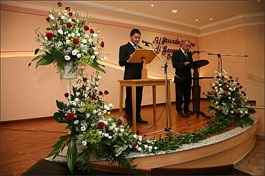
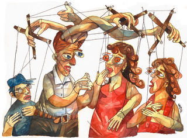

Es un lazo cuando el hombre terrestre ha clamado temerariamente: “¡Santo!”, y después de los votos [está dispuesto] a hacer examen.
—Proverbios 20:25

Este texto refleja muy bien mi sentir. Es una encrucijada que se me ha pasado por la mente desde los pasados cuatro años y medio, casi cinco. Mediante la presente, manifiesto mi deseo de no ser reconocido como testigo de Jehová, ni como miembro activo de esta organización. Cuando me inicié en esta mancomunidad religiosa, era un adolescente de unos dieciséis años. A decir verdad, en esa época tal vez no comprendía lo que implicaba realmente ser testigo de Jehová, y quizá no entendía lo que implicaba el verdadero cristianismo. Friedrich Wilhelm Nietzsche lo describe muy bien en su obra La gaya ciencia, cuando señala que el cristianismo es como una especie de suicidio. Lo dice en esos términos, no porque hable de la automutilación o el sacrificio del mejor estilo musulmán. Lo dice porque describe al cristianismo en términos del asesinato de las pasiones, del asesinato de todo aquello que es inmanente en el ser humano. Cuando se tiene dieciséis años, con el idealismo ingenuo exiguo de empiria a flor de piel, es difícil percibir que al tomar ciertas decisiones, debe haber un sacrificio. Eso no lo entendí en su momento, y es solo unos años después que vengo a comprender esto realmente. Comprendo que el cristianismo es la muerte de sí mismo, la muerte del querer-ser-yo del que habla Kierkegaard en sus obras. Seguramente ustedes dirán que este tipo de cosas se comprenden mientras uno comienza a aprender los principios bíblicos durante la etapa de las enseñanzas fundamentales. Es cierto, se aprende, pero quizá no lo aprendí en toda su dimensión. Jesús dijo que quien quisiera seguirlo, debía repudiarse a sí mismo, tomar su madero de tormento, y seguirle de continuo (Mateo 16: 24). La verdad, a lo largo de los años, y con determinadas experiencias, me he dado cuenta que esas palabras van mucho más allá de obedecer un conjunto de reglas dictadas en un libro sagrado antiguo. En realidad, ese es solo el comienzo de una auto-negación perenne, de un holocausto vital. Permítaseme exponer más claramente a qué me refiero, explicando a su vez el motivo de mi deseo de retirada definitiva.
Como bien es de conocimiento público de todos aquellos que me son cercanos, hace mes y medio finalicé uno de los cursos bíblicos más especializados con los que cuenta la persona jurídica de la Watchtower, la Escuela Bíblica para Varones Solteros, una extensión de la Escuela Bíblica de Galaad. Pues bien, estando allí, precisamente conocí personalmente varios egresados de esta última escuela. Aquellos que finalizan exitosamente el curso que allí se imparte de manera intensiva durante cinco meses, terminan recibiendo la credencial de representantes de la Watchtower en cualquiera de sus sucursales. Este es también el caso de los superintendentes viajantes, de los miembros del comité de sucursal, de los misioneros, de los precursores especiales, y de los egresados de la escuela que finalicé unas pocas semanas atrás. Pues bien, para aquellos que desean tener privilegios especiales de servicio como el precursorado especial, o la obra misional o viajante, cuyos títulos están representados por ser vocero de la Watchtower en cualquiera de sus sucursales en el mundo, deberán hacer un voto de pobreza y un voto de sumisión total a esta entidad. Dicho voto es coherente teniendo en cuenta la calidad del título que ostentan quienes poseen esta credencial. No obstante, me es menester aclarar que me es peculiarmente llamativo este último tipo de voto, el voto de sumisión total. Precisamente, este implica que la persona representante de la Watchtower, al ser totalmente dependiente de la sucursal, debe someterse casi que ciegamente a cada una de las cosas que se estipulen desde el cuerpo gobernante desde la central mundial de Brooklyn. Es decir, no hay la suficiente autonomía para decidir con referencia a determinados asuntos, sino que debe haber una obediencia absoluta e incondicional. Deben someterse sin ningún reparo, aún sin estar de acuerdo, a determinadas resoluciones. En eso se ha explicado que consiste la sumisión, al hacer cosas con las que no se concuerda y obedecer de buena gana. Se anula el criterio del representante, porque ahora este se somete al criterio dado por el cuerpo gobernante. Pues bien, precisamente es eso lo que me resulta difícil de concebir: ¿cómo puede un ser humano obedecer a ciegas las determinaciones que hayan sido estipuladas por un grupo particular? ¿No hay derecho a cuestionar tales operaciones? ¿Debo seguir ciertos procedimientos aun cuando estos vayan en contra de mi voluntad? Particularmente, podría concluirse que, a partir del momento en que alguien se convierte en representante de la Watchtower, pierde su libre arbitrio, para pasar a maniobrar acorde con lo que haya resuelto un círculo constituido de unas pocas personas, esto aun cuando se consideren inapropiados ciertas formas de actuar.
Continuando con este mismo punto, a decir verdad, se habla siempre de un libre arbitrio del cual Dios nos ha dotado. […] Pareciera que en el cristianismo, tal como me lo dijera un compañero de estudios hace varios años, se pudiera obrar de acuerdo a los dictados de la conciencia, según deja entrever un texto como 1 Corintios 8: 8, 9. Esto en apariencia. No obstante, yendo más allá, se da uno cuenta que los hechos corresponden a otro fenómeno. Por ejemplo, un asunto que ha suscitado grandes disputas, inclusive entre los mismos testigos de Jehová, es el asunto de asistencia a centros académicos de educación superior. Aparentemente, es cuestión personal decidir si se asiste a una universidad o no, si se comienza un post-grado o no. Se dice que nadie tiene derecho a cuestionar u opinar o criticar la decisión de quien finalmente opta por cursar estudios universitarios. No obstante, cuando uno va a asambleas de distrito o circuito, especialmente, se enfatiza con insistencia los “peligros” de asistir a este tipo de centros académicos. Se habla en contra del materialismo que allí se promueve, las filosofías allí pregonadas y el espíritu de libertinaje que en verdad se respira en dichos recintos. Se sataniza enérgicamente dichos lugares, y se condenan por su mera existencia. Es verdad: no se puede deificar la educación universitaria; eso que en la Biblia llaman “la sabiduría de este sistema de cosas” (1 Corintios 2: 6, 7), no ha contribuido mucho con una mejor calidad de vida de la sociedad, y de ello dan razón muchos filósofos, poniendo esta problemática como crisis del siglo XX de la post-modernidad europea occidental. Basados en Nietzsche o Schopenhauer, Edmund Husserl, José Manuel Ortega y Gasset, Max Weber, entre otros, dan cuenta de este suceso. Pero, este no es el motivo de mi discordia; aquello de lo que en realidad discrepo es que se hable de un “libre arbitrio”, cuando en realidad se está pre-juzgando una institución como perjudicial y nociva, se condena de antemano la decisión de asistir allí como dañina y denigrante. Se vende una mala idea, una idea negativa, con el fin de generar un cierto pavor, un cierto temor para evitar que los jóvenes asistan a este sarcófago religioso. […]¿Acaso no es más fácil darles unas nociones que les permitan decidir? Pues bien, se me dirá que esto es lo que se hace en las publicaciones del “esclavo fiel y discreto”, dan una noción para que se tome una decisión responsable. Pero no es así. Cuando esto ocurre, hay imparcialidad, se describen los pros y los contras. Sin embargo, pregunto: ¿cuándo se ha sido imparcial y se ha mencionado al menos una ventaja de estudiar en una universidad? ¿No ha ocurrido siempre que se ha incurrido en una lucha feroz por atacar la educación universitaria, matizándola con todos los calificativos más oscuros posibles, tachándole de libertina, corruptora e inmoral? En eso, señores, no ha habido imparcialidad. Peor aún: dichos comentarios son emitidos por quienes nunca han pisado una institución de esta naturaleza. Se critica sin conocer. Sería más válido si esto fuera dicho por alguien que tuviera conocimiento de causa de la cuestión, pero no, no es así. Simplemente, se ataca un recinto sin saber en qué consiste su esencia. Entonces, ¿hay libertad de elección? En teoría la hay, pero en la práctica -si bien no se condena directamente-, hay satanización del suceso, una descripción totalmente negativa de lo que es asistir a una universidad.
Siguiendo por la misma línea, me parece totalmente paradójico que, aquello mismo que atacan, sirve de base para sustentar sus creencias. Cada vez que se trata de defender el porqué de la existencia de Dios, o la autenticidad de la Biblia, se recurre a argumentos científicos. ¿Pero dónde se gesta la ciencia? La ciencia no se concibe como la imaginaban los griegos: con charlas vacuas en los jardines de Atenas, ni tampoco como lo que se imaginaron que le pasó a Newton en el siglo XVI, cayéndole una manzana sobre la cabeza, y dando a luz una idea. El saber científico del que se sacan argumentos bíblicos de revistas como ¡Despertad!, o La Atalaya, o libros como ¿Existe un creador que se interese por nosotros?, o El hombre en busca de Dios; La Biblia: ¿palabra de Dios o palabra del hombre?; La vida, ¿cómo se presentó? ¿Por evolución o por creación?; Toda Escritura es inspirada de Dios y provechosa, y muchos otros, han surgido del saber académico que ustedes tanto critican, de los centros universitarios, de destacados biólogos, físicos, médicos, antropólogos, filósofos, filólogos, psicólogos, sociólogos, historiadores y demás. Entonces, si bien es cierto que se dice que la principal autoridad de los testigos de Jehová es la Biblia, ¿qué se haría para convencer a un erudito de su mensaje si no fuera por ese despliegue de saber que tanto se ha vilipendiado? A él no le convence simplemente saber que la Biblia dice esto o aquello; mucho más es necesario para lograr estos fines de persuasión. Pero al margen de todo esto, ¿no puede decirse entonces que ese saber académico que con tan malos ojos se ve le ha sido provechoso a todo el cuerpo gobernante para sus fines? ¿O es que acaso se es tan incoherente como para utilizarlo únicamente para las conveniencias persuasivas a las élites cultas? ¿Está dicho saber restringido a unos pocos? ¿Solo el cuerpo gobernante debería estar informado de las novedades de la ciencia y publicarlas para sus fines persuasivos en ciertas situaciones al grueso de sus adeptos? ¿Es acaso inconcebible que alguien de la masa de testigos de Jehová rasos puedan conocer otras cosas distintas a las que el cuerpo gobernante tiene acceso? Y lo que me parece más antiético: ¿se vale de la propia institución que tanto critica para mostrar la veracidad de su mensaje? ¿No es apenas lógico que si tanto la abomina, no la utilice para sus propios intereses? Son preguntas que me surgen apenas.

De esta manera, concluyo, con referencia nada más a este primer punto, que se nos habla de respetar el “libre arbitrio” de los demás, se nos habla de la libertad de elección, pero a la vez es casi que inadmisible que un testigo de Jehová adquiera ciertos saberes seglares a causa de la peligrosidad que corre su fe, a la par que utilizamos dicho conocimiento para convencer a aquellos que no comparten el mensaje de las “buenas nuevas del reino”. En realidad, pertenecer a la comunidad religiosa de los testigos de Jehová implica una mutilación del propio pensamiento, implica utilizar la capacidad intelectual para los fines del cuerpo gobernante, implica someterse totalmente a los designios de un grupo de individuos, implica coartar el libre albedrío, la capacidad frente a la toma de decisiones, y la validez de un discurso que acepto aún en contra de mi voluntad. Es tal como lo dijera una canción de metal acerca de las religiones cristianas: blind devotioncame, rotting your brain, vino la ciega devoción que taladra tu cerebro. La verdad, no es mi deseo someterme incondicionalmente a los criterios de un pequeño grupo con referencia a asuntos de mi vida particular, no es mi deseo tomar decisiones que, aparentemente, son cuestiones de conciencia que, en último término, serán juzgadas por otros, no es mi deseo someterme a las estipulaciones de otros que controlarán asuntos de mi vida personal, que me digan qué desear, o qué metas anhelar. No deseo vivir en conformidad con los valores que me dicte un grupo. Porque además, tal como lo diría Erich Fromm, al ser el cristianismo un fenómeno permeado de tanto helenismo, termina importando más la creencia, la doctrina, que la misma actitud, que la misma conducta. Importa más lo que se cree, lo que se ha dicho, que lo que en realidad se puede estipular como bueno. Es decir, en la creencia cristiana se está errado si no te sometes a la creencia que se ha institucionalizado, importando eso más a si eres un ser integral. ¿Entonces me someto a un grupo de personas que me consideran perverso por leer filosofía y no creer en el cristianismo, ni compartir sus ideas, aún si uno se caracterizara por sus actos humanísticos y bondadosos? Pues bien, según se ha enseñado en las publicaciones de los testigos de Jehová, solo puede ser justo o bueno alguien que practique esta religión, siendo todas las obras caritativas nulas de alguien si no se ha inscrito en sus filas. Importa más la doctrina, someterse a lo que piensa quien dirige esta organización, que los buenos actos que pueda hacer quien es ajeno a esta mancomunidad. De este asunto me siento particularmente afectado. Estando en la Escuela Bíblica para Varones Solteros, mi compañero de habitación, de quien prefiero no mencionar el nombre, me dijo explícitamente, que la razón por la que me albergaba cierta animosidad, dificultando esto la convivencia entre ambos, era mi gusto por el heavy-metal, importando más esto que el hecho de que yo me esforzara por darle dádivas que ayudaran a limar asperezas, importando más ese hecho de una preferencia personal que el cuerpo gobernante ha criticado, que el hecho de que me esforzara por ser diligente en mis asignaciones, cordial y servicial con el resto de personas. Me despreció por una preferencia personal, no por algo realmente serio como mi forma de comportarme con los demás. ¿Entonces? ¿Se identifica a los verdaderos cristianos por sus frutos, como lo dice Juan 13: 34, 35? No, se identifican más bien por su doctrina, por su capacidad de sometimiento, sumisión y abnegación en favor de los dictámenes del cuerpo gobernante, de la capacidad de negación de su pensar para validar el discurso de otro. Eso es lo que en verdad implica ser testigo de Jehová: repudiarse a sí mismo, y seguir las estipulaciones que el cuerpo gobernante ha dictado. De eso no era consciente en el momento de mi bautismo, de cómo debía negar mi capacidad de pensar, y, al desconocerlo, al desconocer los distintos criterios que podía haber al respecto, pues, sencillamente obré por no haber conocido más posibilidades. Es tal como lo dijera Wittgenstein: cuando no hay dialéctica, una verdad se acepta como única por el desconocimiento de otras revelaciones. Ahora que entiendo qué decidí, y luego sí comprendí qué decisión había tomado, pues me niego a someterme a aquello por lo que alguna vez me sacrifiqué.
Hay otro asunto por el cual decido romper mis vínculos con esta organización religiosa. Siempre se ha dicho que la Biblia es la palabra de Dios. Se dice que es un libro auténtico, un libro que muestra sabiduría superior a todos los demás, y que se ha caracterizado porque permanece en el tiempo. […]No obstante, a pesar de toda la sabiduría que pudiera hallarse en los principios de la Biblia, que tanto se pondera como un libro de inspiración exclusiva, creo que se ha olvidado destacar que este texto sagrado recibió otras influencias ajenas a la divina. Este hecho no se destaca. Se ha dejado de lado. ¿La razón? ¿Pudiera ser que quisiera ocultarse sabiduría externa que se anticipó a los escritos divinos? ¿Pudiera ser que se piense que esto no debe ser conocido por otros para que no se destaquen publicaciones ajenas a las sagradas escrituras? ¿O puede que, simplemente, se desconozca este hecho? Lo ilustro con varios ejemplos. […] los judíos de la diáspora: los judíos de habla griega esparcidos por el imperio romano. De ellos seguramente Pablo provenía. El judaísmo, la religión que practicaba Pablo, no era únicamente el Pentateuco, o los Profetas. En realidad, el judaísmo era la doctrina judía permeada de doctrina griega (Gálatas 1: 13, 14). Entonces, Pablo conocía, ciertamente, las enseñanzas de Aristóteles, Sócrates, Platón, Heráclito, Parménides, Pitágoras, Hesíodo, Homero, en fin, de todos estos sabios de la antigüedad clásica. Así las cosas, algo del helenismo tuvo que dejar mella en Saulo de Tarso. Pero para ir más allá, al leer libros como La República, de Platón, o La Política y La Metafísica de Aristóteles, halla uno ciertas similitudes entre lo que decía Pablo y estos otros pensadores. Por ejemplo, Sócrates destacó en diversas ocasiones que el hombre no debía casarse a una edad muy temprana para formar su familia; él hablaba de cuarenta o cincuenta años en ese tiempo. ¿No es esto similar a lo que dijo Pablo en la primera carta a los corintios en la que destacó que quien deseara casarse esperara hasta que pasara la flor de su juventud? O si no, en más de una ocasión destacó que el hombre debía esmerarse por cultivar la virtud, y no anhelar la posesión de riquezas materiales, anteponiendo el deseo de desarrollar la intelectualidad, la espiritualidad y el raciocinio, cosa que los griegos siempre ponderaron por encima de todo. Eso lo hacía permanentemente en todas sus obras. Baste con leer La apología de Sócrates, para darse cuenta de esto. ¿No es esto similar a aquello que decía Pablo cuando decía que las cosas espirituales son eternas y las visibles son temporales? También hay otras ideas más que son similares, como por ejemplo la manera de ver las mujeres en el mando. Es bien sabido que el helenismo, como la supuesta primera democracia, consideraba a la mujer como una niña sin criterio, como un ente inferior que debía supeditarse ciegamente a la autoridad del hombre. Pues bien, con el paso de los años, he aprendido a entender que la Biblia no promueve el machismo; pero igual, al leer los escritos de Pablo, uno podía percibir cómo la influencia griega se notaba en sus escritos al decir que no permitía que la mujer ejerciera autoridad en la congregación. Se dejaba entrever un cierto gajo de machismo, una cierta actitud despectiva hacia ella. ¿No es similar al concepto griego que se tenía sobre la mujer?
[…] Por otro lado, deberé señalar que, en ocasiones, la interpretación que los testigos de Jehová hacen de la Biblia, me resulta forzada. […] En la asamblea de distrito del año de servicio 2007-2008, se presentó un drama acerca de la vida de Timoteo. Se decía que él tuvo que enfrentarse a una disyuntiva: o elegir la educación de las grandes escuelas de Grecia, o elegir el camino del servicio a Dios de tiempo completo. Claramente, se nota que Timoteo eligió lo segundo, enfrentándose a la presión de su padre heleno. Pero pregunto: ¿eso aparece en la Biblia? ¿Dice la Biblia que Timoteo hubiera tenido que enfrentarse a su padre y optar por el camino del servicio de tiempo completo? ¿Indica la Biblia que lo hayan presionado otros hermanos para que escogiera ir a los recintos académicos griegos? Honestamente, eso no lo menciona jamás. ¿De dónde sacan esas conjeturas? ¿No dicen que no hay que dar lugar a especulaciones y solo ceñirse a la fiel palabra de la verdad? ¿Por qué especulan con lo que pudo haber pasado? ¿Para darle lugar a una publicidad a algo contra lo cual hace tiempo se alberga animosidad como es la educación universitaria? ¿Por qué no se ciñen a lo que específicamente está escrito? Yo, particularmente, cuando vi ese drama, lo consideré una manipulación de la información, basándose un poco en la credibilidad que el esclavo fiel y discreto se ha ganado con el paso de los años. Esto yo se lo dejé entrever a un anciano. Me dijo que cuando vio mi reacción al drama, vio en mí una la actitud de un hombre carnal, no la actitud de un hombre espiritual. Me dijo que esa actitud analítica y crítica me convertía en un apóstata en potencia; de hecho, me dijo que yo era un apóstata en potencia. Me dijo que para la fe es perjudicial el analizar los asuntos. No le dije nada. Con él no tiene caso discutir, dada la institucionalidad de su familia dentro de la organización. Siendo así esto, he preferido, al pasar los años, guardar mis opiniones y no compartirlas, dado que se me ve como si estuviera incitando prácticas nocivas como un asesinato, […]. La conclusión: cuestiónate cuando no eres testigo de Jehová, y búscanos que nosotros te contestamos; cuando seas uno de nosotros, no preguntes, acata, eso es la sumisión teocrática, y eso le agrada mucho a Jehová.
[…] Los testigos de Jehová hablan de que se les perseguirá cuando su familia les vea conversos a esta religión, pero también ocurrirá en sentido inverso: se presionará a todo aquel que no desea seguir la doctrina cristiana por no concordar con ella. Se le dirá que al alejarse del cristianismo se aleja uno de Dios. Se le dirá que se ha descarrilado del camino que lleva a la vida eterna, y que ahora ha puesto en peligro su posibilidad de salvación. Ahora la forma de perseguir toma otro rostro: no es la tortura física, no es el holocausto, no es la cámara de gas; es el du sollst nicht, del que habló Nietzsche en El Anticristo, el no-debes, porque Dios te traerá a juicio, el no-debes porque Jehová tu Dios es un Dios que exige devoción exclusiva, el no-debes porque pararás en muerte. Esa es la nueva forma de persecución al disidente: la tortura psicológica de la destrucción eterna en el gehena, el juicio que le espera al hombre del desafuero. […] Pues bien, siendo esto así, estoy dispuesto a asumir la responsabilidad que sé que esto conlleva. Pero no estoy dispuesto a promover las creencias de un grupo con el que ya no concuerdo. Distinto sería si lo creyera, pero dado que mi corazón se ha alejado de esta doctrina, prefiero ser coherente y defender aquello que con el tiempo se ha ido convirtiendo en la base de mi creer.
Ya no creo en el cristianismo. No hablo de los crímenes que han perpetuado: la Inquisición, la colonización occidental a tierras americanas, la estafa de las iglesias cristianas, las sanaciones milagrosas, la vindicación del divorcio que hizo Enrique VIII al fundar la iglesia anglicana. Eso no es cristianismo. Eso es cristiandad. […] Así las cosas, reitero enérgicamente el motivo de mi retirada: el sometimiento a ciegas de las directrices de un grupo de personas, la condena despiadada y absurda a la toma de decisiones personales que no concuerden con el consejo de la Watchtower y sus representantes, la especulación en la interpretación de ciertos pasajes de las escrituras, y la venta de la idealización de la mancomunidad Watchtower como una organización de personas de bien, ocultando que en realidad allí puede haber personalidades perversas, tal como las hay en toda parte. Me retiro porque se considera inicuo a quien no piensa igual que ustedes, y dado esto, prefiero salirme a estar en un grupo que no me permite pensar, un grupo que no es coherente en muchos de sus procederes, en un grupo que te condena por no creer, no tanto por tu hacer. Charles Taze Russell y Joseph Rutherford dijeron: si alguien ha conocido un mejor camino en la vida que este, que lo siga. Pues sí, yo ya lo encontré[…]Es mi libre arbitrio, mi libertad, mi conciencia. No necesito una religión, necesito pensar, necesito mi espacio, en donde sea yo quien tome mis decisiones, exento de toda la manipulación propagandística de un grupo de personas que condenan el saber, tal como en la Edad Media, saber disfrazado de racionalidad, escondido detrás de dos palabras: cuerpo gobernante. No necesito ello. Lo único que necesito es quitarme la presión de sentirme miserable si no actúo como ellos, necesito mi lugar, necesito empezar a actuar por mis medios, basado en el conocimiento que voy adquiriendo. No se piense que esto me hará un ser promiscuo, licencioso, o inmoral. Hay límites, y eso lo aprendí aquí. Muchas gracias por estos años. No se niega lo que aprendí durante tanto tiempo. Pero no me quiero someter ciegamente a otra autoridad, ni hacerle propaganda a quien me considera pecador por pensar, por decidir por mí mismo. Créanme que he conocido mucha gente que no es religiosa, y puede llegar a ser mejor que muchos adeptos de esta iglesia. No se necesita una religión para ser una persona integral. Nietzsche decía que el peor error de los hombres era seguir a un ídolo, a una institución. De ello ya me he dado cuenta; así, no voy a seguir una institución, lo peor es tratar de encajar con ellas. […]
Simplemente, deseo hacer uso del pensar sano y mi racionalidad para ser responsable y autónomo, buscando el bien para mí y los que me rodean. No quiero adoctrinarlos a ustedes ni mucho menos. No quiero que me crean. No les estoy pidiendo permiso para irme. Les estoy notificando mi resolución. Si ese es el camino que les hace felices, no tienen porqué cambiarlo; sigan ahí, y tengan la certeza que esto que digo está desprovisto de sarcasmo. Yo, por mi parte, no quiero que este camino sea el de mi vida ni la vida de otros. Quiero que cada cual haga su camino sin abusar del otro, sin hacerle el mal, y buscando el bien, sin manipular ni chantajear. Eso es lo que quiero.
Por último, solo quiero pedirles que si antes de este domingo no se ha hablado conmigo al respecto de los asuntos de esta carta, pueden, perfectamente, hacer el anuncio el próximo miércoles 23 de noviembre de 2011, acerca de mi retiro de esta organización religiosa. No veo problema en ello, y si hablo con ustedes, espero, como condición fundamental, que no me traigan publicaciones de la Watchtower ni se preparen para persuadirme de algo para lo cual ya estoy resuelto. […]Hasta nunca. Se despide de ustedes quien fuera su servidor,
Respetuosamente,
José Leonardo Franco Urrego.
Volver a la sección Examinando las religiones
Comentarios
Comments powered by Disqus